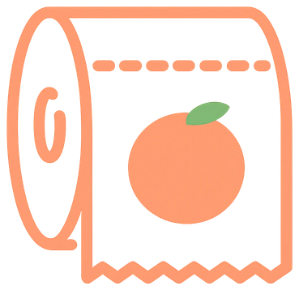
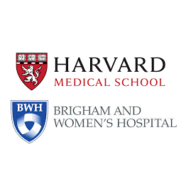

Je suis ingénieur logiciel et product owner, spécialisé dans les applications web pour la recherche scientifique. Formé au traitement du signal et de l'image à l'INSA Lyon et à l'Université Lyon 1, j'ai commencé par développer des algorithmes d'analyse d'IRM cérébrales au Center for Neurological Imaging (Harvard Medical School, Brigham and Women's Hospital), à Boston.
Depuis 2018, j'ai conçu avec des équipes internationales des plateformes web et un jeu tablette de crowdsourcing pour l'analyse d'images médicales (Node.js, React, Python), et contribué à des publications dans Radiology et le Journal of Neuroimaging.
Aujourd'hui au CNRS, à la Maison de l'Orient et de la Méditerranée, je développe et je pilote Siamois, une application d'enregistrement de terrain archéologique : spécifications, priorisation en Agile, ateliers de cadrage avec les équipes métiers, et code en Java et Spring Boot.
À la une

Siamois
Application web d'enregistrement de terrain archéologique : partager l'information archéologique, du chantier à la base de données.

Pose ta pêche
Trouver des toilettes à proximité, gratuites ou accessibles, tenir un journal de ses pêches et suivre celles de ses amis. Né d'une blague entre amis sur les berges de la Saône, plus de 600 000 toilettes référencées dans le monde.
Parcours
- Oct. 2024 – aujourd'hui
CDD · Lyon CNRS
CNRS MOMSiamois
MOMSiamoisSiamois
Développement et pilotage produit d'une application d'enregistrement de terrain archéologique.
- Mars 2021 – 2025
Freelance
Harvard / BrighamSPINE
Plateforme collaborative d'analyse d'imagerie, publiée dans Radiology et J. Neuroimaging.
- Sept. 2018 – Mars 2021
Lyon · à distance U. BordeauxHarvard / Brigham
U. BordeauxHarvard / BrighamSPINE Tablet Game
Fullstack et consulting avec des équipes internationales, jeu éducatif de crowdsourcing.
- Avr. 2017 – Fév. 2018
Stage · BostonHarvard / BrighamTraitement d'IRM
Algorithmes C++/Python sur IRM cérébrales, premier backend web.
- 2014 – 2017
Formation INSA Lyon
INSA Lyon Lyon 1
Lyon 1Ingénieur & Master
Génie électrique, traitement du signal et de l'image. Master imagerie médicale.
Projets
CV
Compétences
- Node.js, JavaScript & TypeScript, React
- Java, Spring Boot, JSF
- Python / C / C++
- JSON / JSON Schema
- CouchDB / PostgreSQL
- Git / CircleCI
- Docker / Singularity
- Travail en équipe internationale
- Produit : spécifications, Agile, ateliers de cadrage
Langues
- Français — langue maternelle
- Anglais — courant
Publications récentes
- Bouman, P. M., Noteboom, S., Santos, F. A. N., et al. (2023). Multicenter Evaluation of AI-generated DIR and PSIR for Cortical and Juxtacortical Multiple Sclerosis Lesion Detection. Radiology, 307(10). DOI: 10.1148/radiol.221425.
- Deol, M., Palotai, M., Pinzón, A. M., et al. (2020). Identification and Characterization of Leptomeningeal Metastases Using SPINE, A Web-Based Collaborative Platform. J. Neuroimaging, 31(2). DOI: 10.1111/jon.12820.